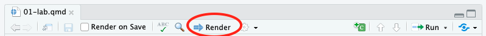

Warning: package 'ggplot2' was built under R version 4.5.2Module 4: Homework Instructions
Purpose
In this week’s homework, you will be asked to demonstrate your understanding of partial correlations and regression analysis.
Access the Starter Files for Module 4
Go to posit.cloud and then navigate to the course workspace via the left sidebar.
- Look for the course workspace called “Statistical Methods Spring 2026”
Open the project titled Module 3 This module contains the starter files that you will use for this lab and for your homework.
Starter Files
In the Files pane you should see these two R Notebooks:
- mod-04-lab-starter.qmd
- mod-04-hw-starter.qmd
Open up mod-04-hw-starter.qmd.
Render it!
Click the button called “Render” (circled in the image below) and then double check to see that your document rendered in the Viewer pane. It is always a good idea to occasionally check that the document still renders correctly after making changes.

Load Packages
Today, we’ll be using the following packages:
- tidyverse: a collection of packages for doing data analysis in a “tidy” way
- psych: a package that provides various functions for psychological research and data analysis
- papaja: a package that supports the formatting of APA style documents
- broom: a package that turns R output into tidy tables
- knitr: a package that supports the integration of code into text documents, we will be using it today to create a table
Please load these packages using the library() function. If the packages don’t load, you may need to install.packages() first.
Read in the Data
The dataset we will use comes from data from Kay (2021). This paper examines why people believe in conspiracy theories.
The data is called data_kay2021.csv. Read in the data using the read_csv() function. Name the data “kay2021”
Note
If you are having trouble reading in the data, remember that they are in the data folder!
Now, use the View() function to take a look at your data.
Exercise 1:
Say a researcher is interested in whether there is a relationship between the tendency to believe in conspiracy theories (Y = conspiracy) and paranoia (X1 = paranoia) when controlling for person’s general tendency to have delusions (X2 = delusions).
Calculate and report the partial correlations for this scenario. For this exercise, your report can be as simple as: “The partial correlation is XXX.”
Explain the what partial correlation means.
Exercise 2:
We want to predict the tendency to believe in conspiracy theories (Y = conspiracy) from paranoia (X1 = paranoia) and delusional ideation (X2 = delusions). Take the following steps:
Run a regression predicting the tendency to believe in conspiracy theories (Y =
conspiracy) from paranoia (X1 =paranoia) and delusional ideation (X2 =delusions)Write out your interpretations of the overall model (both R2 and the F-statistic) and each of the regression coefficients (\(\beta_0\), \(\beta_1\), and \(\beta_2\)).
Run regression diagnostics (i.e.,
check_collinaerity()) to look for potential multicollinaerity. Comment on what you find, but not need to tryProvide an APA-style summary of your results (make sure it contains all necessary pieces, check lab for an example).
Exercise 3:
Treat the model you ran in Exercise 2 as Model 1. Make a new model, Model 2, that includes all the predictors in Model 1 plus the desire for uniqueness (uniqueness) and the desire for control (control).
Perform a model comparison to test whether the variation in the tendency to believe in conspiracy theories is accounted for by a desire for uniqueness and control (TOGETHER, AS A SET) above and beyond the variation already accounted for by paranoia and delusional ideation.
Treat the model you ran in Exercise 2 as Model 1. Make a new model, Model 2 (name it model_2), that includes all the predictors in Model 1 plus the desire for uniqueness (uniqueness) and the desire for control (control).
Perform a model comparison to test whether the variation in the tendency to believe in conspiracy theories is accounted for by a desire for uniqueness and control (together) above and beyond the variation already accounted for by paranoia and delusional ideation.
Run a regression predicting the tendency to believe in conspiracy theories (Y =
conspiracy) from paranoia (X1 =paranoia), delusional ideation (X2 =delusions), desire for uniqueness (uniqueness) and the desire for control (control). Call itmodel_2.Write out your interpretations of the overall model (both R2 and the F-statistic) and EACH of the regression coefficients (e.g., \(\beta_0\), \(\beta_1\), \(\beta_2\), etc …).
Run regression diagnostics (i.e.,
check_collinaerity()) on Model 2 to look for potential multicollinaerity. Comment on what you find, but not need to try to correct anything.Conduct a model comparison between Model 1 and Model 2. Answer the question: Does Model 2 explain significantly more variance in the tendency to believe in conspiracy theories than Model 1?
Report the change in SSE between Model 1 and Model 2. Hint: we called this
ssrin lab.Provide an APA-style summary of your results (make sure it contains all necessary pieces, check lab for an example).
Render and submit your document.
Make sure that you I can see all of your answers in the rendered document!
To receive credit for this homework, submit a rendered PDF version of your file to “Module 4: Homework Submission” on Canvas.
- At the top of the .qmd file, change “format: html” to “format: pdf”
- Click “Render” at the top of the document
- Your document will open in a browser tab
- If your document opens in the “Viewer” pane, click the “sidebar” button (circled in image below).
- If you get a popup warning, click “Try Again” (may be specific to Mac)

- Click the “Save” icon on the top right (circled in the image below)

- Save wherever you keep your class documents and upload your file to Canvas